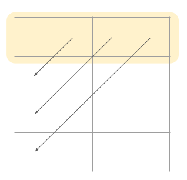

Efficient Matrix Transpose
19. November 2024
In this blog post, we are going to implement and benchmark different in-place algorithms for transposing square matrices. The goal is to optimize the algorithms with respect to speed and throughput, taking into account cache behavior. First I describe the problem, then we look at the algorithm implementation and finally I present my benchmarking results. The complete project is available on GitHub. In another project I parallelized matrix transpose algorithms for GPU's with CUDA. Feel free to check it out and contact me if you have any questions or comments.
The Problem
Before we dive into the algorithms, let me first recall a little bit of theory and describe why the implementation of matrix transpose is challenging. So mathematically speaking, if we have a matrix , the transpose of the matrix is defined as
So all entries are swapped along the matrix diagonal. For simplicity, I will assume that matrices have dimensions of for . As a result, the implemented algorithms don't need to accommodate changes in the output matrix's shape. I also assume that the matrices are stored and accessed in a row-major memory layout. All considered algorithms are in-place, so no new memory is allocated.
While implementing an algorithm that computes the transpose of a matrix is straightforward, coming up with an efficient implementation is quite tricky. In general, leveraging spatial locality (accessing elements that are close by in memory) and temporal locality (accessing the same element throughout different time steps) can improve efficiency. Because each element of the matrix is accessed only once, temporal locality cannot be exploited for computing the transposed matrix
Siddhartha Chatterjee et al, 2000

Algorithms
Let's take a look at three different algorithms for in-place matrix transposition. The first implementation can be directly inferred from the mathematical definition
/*
params:
size: Size of matrix
mat: Matrix to transpose
*/
void naive_transpose_int_matrix(int size, int* mat){
for(int i = 0; i < size; i++){
for(int j = i+1; j < size; j++){
int tmp = mat[i*size+j];
mat[i*size+j] = mat[j*size+i];
mat[j*size+i] = tmp;
}
}
}
Transposition is performed by iterating over all entries above the matrix diagonal and swapping them with the corresponding entries below the diagonal. The first implementation will serve as the baseline implementation to measure performance improvements. The main issue with the naive implementation's memory access pattern is the disjointed access from mat[j*size+i], potentially causing poor cache performance, especially with larger matrices where mat[j*size+i] might not be present in cache and requires loading from memory.
The second implementation tries to improve performance by prefetching the memory addresses needed in the next iteration. This should reduce cache-miss latency by moving data into the cache before it is accessed
GCC Team, 2023 (Accessed 27.04.2024)
/*
params:
size: Size of matrix
mat: Matrix to transpose
*/
void prefetch_transpose_int_matrix(int size, int* mat){
for(int i = 0; i < size; i++){
for(int j = i+1; j < size; j++){
int tmp = mat[i*size+j];
mat[i*size+j] = mat[j*size+i];
mat[j*size+i] = tmp;
__builtin_prefetch(&mat[j*size+(i+1)], 0, 1);
__builtin_prefetch(&mat[(i+1)*size+j], 1, 1);
}
}
}The built-in function __builtin_prefetch can be used to perform prefetching. __builtin_prefetch takes as arguments the address to be prefetched and two optional arguments rw and locality. Setting rw to 1 means preparing the prefetch for write access and setting locality to 1 means that the prefetched data has low temporal locality
GCC Team, 2023 (Accessed 27.04.2024)
The third algorithm implements a recursive pattern for matrix transposition. It uses the fact that
Where and are submatrices. Note that the submatrices and get swapped. The idea behind this algorithm is that it splits the matrix into four sub-matrices until the submatrices fit into the cache. Then the submatrices get transposed and the quadrants get swapped.
void transpose_block(int size, int *mat, int row_offset, int col_offset) {
if (size <= 128) { // Base case, use a simple loop for small matrices
for (int i = 0; i < size; ++i) {
for (int j = i + 1; j < size; ++j) {
int tmp = mat[(row_offset + i) * size + (col_offset + j)];
mat[(row_offset + i) * size + (col_offset + j)] = mat[(row_offset + j) * size + (col_offset + i)];
mat[(row_offset + j) * size + (col_offset + i)] = tmp;
}
}
} else {
int m = size / 2; // Divide the matrix into four quadrants
// Transpose each quadrant recursively
transpose_block(m, mat, row_offset, col_offset);
transpose_block(m, mat, row_offset, col_offset + m);
transpose_block(m, mat, row_offset + m, col_offset);
transpose_block(m, mat, row_offset + m, col_offset + m);
// Swap the quadrants to achieve in-place transposition
for (int i = 0; i < m; ++i) {
for (int j = 0; j < m; ++j) {
int tmp = mat[(row_offset + i) * size + (col_offset + m + j)];
mat[(row_offset + i) * size + (col_offset + m + j)] = mat[(row_offset + m + i) * size + (col_offset + j)];
mat[(row_offset + m + i) * size + (col_offset + j)] = tmp;
}
}
}
}
void transpose(int size, int *mat){
transpose_block(size, mat, 0, 0);
}For a matrix size of 128 or smaller the algorithm performs a normal transpose operation. Otherwise, the matrix is split into four submatrices and the function is called recursively. After the transposition of the submatrices, the upper-right and bottom-left quadrants need to be swapped. This algorithm exploits spatial locality as it divides the matrix into sub-matrices that can fit into the cache. The third algorithm also has a reduced I/O complexity of
Sergey Slotin, 2022 (Accessed 27.04.2024)
Experiments
Each algorithm was compiled with optimization levels -O0, -O1, -O2, -O3. Each resulting binary was evaluated 50 times for matrix sizes between and . Cache data was collected using Valgrind
Valgrind Developers, 2022 (Accessed 27.04.2024)
- MacBook Air (2020) having a M1 chip with 3,2 GHz and 8 cores, 8GB of RAM, 131KB L1 instruction cache, 65KB L1 data cache, 4.2 MB L2 cache and a cacheline size of 128 byte.
- iMac (2011) having a Intel Core i5 with 2.5GHz and 4 cores, 8GB of RAM, 64KB L1 cache, 1MB L2 cache, 6MB L3 cache and a cacheline size of 64 byte.
Unfortunately Valgrind is not officially supported for ARM-based Apple computers
Valgrind Developers, 2022 (Accessed 27.04.2024)
Louis Brunner, 2024 (Accessed 27.04.2024)
The third algorithm achieved the highest speedup with optimization flags. It showed a speedup of 7.81 on the MacBook Air and 5.7 on the iMac when comparing non-optimized code to code with -O3 enabled for matrix size .
On the MacBook Air, the third algorithm gained an additional speedup of 1.46 for matrix size using -O2 and -O3 optimizations compared to -O1 optimization.
The second algorithm performs slightly better for large matrices with some optimization enabled, resulting in a speedup of 2.11 on the MacBook Air and 1.73 on the iMac for matrix size .
Enabling optimization flags can be disadvantageous for execution time performance (see naive and naive_prefetch implementations for matrix size ). Beside the execution time, I also computed the effective bandwidth
Where is the matrix size in bytes (assuming an integer is 4 bytes long). We multiply the matrix size in bytes by 2 because every matrix element is read and written. Finally, we divide by the execution time . The effective bandwidth tells us how many bytes we move per execution time. Usually, a higher effective bandwidth is better. The following plots report the effective bandwidth of the different implementations
It's evident across all graphs that the effective bandwidth decreases as the matrix size increases. This trend arises because the matrix size grows exponentially with a base of 2, while the execution time grows exponentially with a base of roughly 10. Consequently, the execution time increases more rapidly than the matrix size, leading to a decline in effective bandwidth. Nevertheless, the third algorithm performs best when optimization is turned on, achieving significantly higher effective bandwidth. In some cases the third algorithm with optimizations achieves 9.95x higher bandwidth compared to the unoptimized version. The third performance metric I measured, was cache performance. In the following table you can see the summary output of the Cachegrind tool for the iMac
| Name | Ir | Dr | DLmr | Dw | D1mw | DLmw |
|---|---|---|---|---|---|---|
| Naive | 20.6 | 5.1 | 0.14 | 2.4 | 0.016 | 0.016 |
| Oblivious | 41.1 | 10.1 | 0.041 | 4.7 | 0.033 | 0.033 |
The naive and naive_prefetch implementations show similar cache patterns (therefore naive_prefetch is omitted in the table), while the oblivious128 implementation stands out with different cache behavior. Comparing cache data across implementations, it's evident that the oblivious128 implementation requires approximately twice as many instructions (Ir), data reads (Dr), and data writes (Dw) as the naive implementation. The difference could be a result of the extra instructions required for transposing submatrices and copying quadrants in the oblivious128 algorithm, leading to a greater overall instruction count. Another notable finding is that the last-level data cache read misses are significantly lower for the oblivious128 implementation. This may be due to the improved fit of submatrices utilized in the oblivious128 algorithm within the cache.
Conclusion
After analyzing various algorithms and metrics, we saw that utilizing blocks can enhance the performance of matrix transposition algorithms. This was demonstrated through the better execution time and effective bandwidth of compiler-optimized versions of the oblivious128 implementation. The third algorithm also presents promising directions for parallelization, as each submatrix can be processed independently, offering straightforward potential for parallel execution. If you are intrested in more, here I parallelized matrix transpose algorithms for GPU's with CUDA.
References
[1] Siddhartha Chatterjee et al. "Cache-efficient matrix transposition", 2000
[2] GCC Team. "GCC Documentation", 2023 (Accessed 27.04.2024)
[3] Sergey Slotin. "Algorithmica", 2022 (Accessed 27.04.2024)
[4] Valgrind Developers. "Valgrind", 2022 (Accessed 27.04.2024)
[5] Valgrind Developers. "Valgrind Documentation", 2022 (Accessed 27.04.2024)
[6] Louis Brunner. "Valgrind for macOS", 2024 (Accessed 27.04.2024)